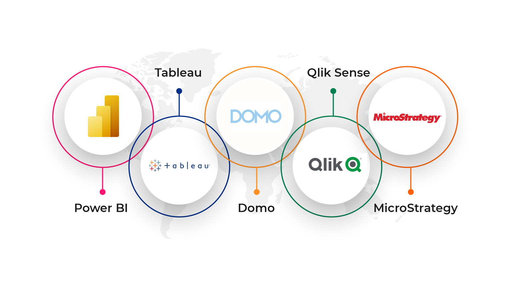

The Power of Data Visualization Beyond Tableau and Power BI
A New World Beyond the BI Giants
I’ll admit it: I’m a huge fan of data visualization software. For years, Tableau and Power BI have been the go-to tools for many analysts. Yet I’m genuinely excited to see the market expanding with more options every year (options like Google’s Looker).
Looker itself has rapidly grown from a challenger to a leader, especially after being acquired by Google. Gartner’s 2025 rankings even place Looker in the Leaders quadrant, alongside Tableau and Power BI (Ahmad & Zinsmeister, 2025; Zubkova, 2025). This validates that the era of only Tableau or Power BI is over.
The diversity of BI tools today shows that innovation is thriving. Airbnb, for example, created Apache Superset as an alternative to Tableau because of scale and cost limitations (Mukherjee, 2023). Each new platform brings something unique, from semantic modeling in Looker to search-driven analytics in ThoughtSpot.
The Multi-Tool Reality of Data Visualization
In practice, one tool is rarely enough. Different projects and constraints lead analysts to explore diverse approaches:
- Built-in SaaS dashboards: Many platforms now offer their own visualization layers. For example, InMoment provides drag-and-drop dashboards for customer experience analytics. Mixpanel and Amplitude offer similar product analytics tools.
- Custom web dashboards: Sometimes you need full control. Templates like AdminLTE combined with JavaScript libraries like Highcharts allow developers to embed branded, interactive analytics directly into applications.
- Excel workarounds: Excel remains ubiquitous, but it can’t truly design interactive dashboards and often results in static, error-prone reports (Team Sigma, 2023). It’s a stopgap, not a scalable visualization strategy.
InMoment

AdminLTE

Excel
For a business analyst, adaptability is key. A modern analytics career requires switching between SaaS dashboards, BI platforms, and code-based solutions depending on the problem at hand.
My Case: Going License-Free with Python and Plotly
This is the main reason I wrote this post. While working at Duke’s Fuqua School of Business witht he Marketing Intelligence team, I needed to build a professional, interactive visualization without relying on licenses or external hosting. My solution? Plotly with Dash in Python.
With Plotly, I could clean, analyze, and visualize data in one workflow. Dash then let me assemble those visuals into a browser-ready dashboard, exportable as a simple .html file. The result was a standalone interactive dashboard that required no licenses, servers, or installations.
This approach isn’t just for schools. Companies like Lululemon, Campbell’s, and Colgate use Dash for analytics, while the Kansas City Chiefs apply it to fan engagement and ticket pricing analytics (Plotly, 2025).
Flexibility Comes at a Cost
Of course, code-based solutions come with trade-offs:
- User Friendly: Tableau enables drag-and-drop dashboards quickly. Dash requires Python knowledge, making it harder for non-technical users.
- Customization: Dash lets you integrate any model, API, or calculation into a dashboard; flexibility Tableau can’t always match.
- Performance and Scalability: One interesting thing I found is that a well-designed Python dashboard can handle surprisingly large data sets quite efficiently, especially if you aggregate or pre-compute as needed. We saw this at Airbnb, where Tableau struggled with huge data and required extracts, whereas their custom solution (Superset) was built to query big data engines directly.
- Cost: Tableau and Power BI licenses are expensive, while open-source libraries like Plotly are free.
- Collaboration: Sharing Tableau files is simpler for business users, while Python dashboards require Git/code familiarity.
Both approaches have strengths. The skill lies in knowing when to use each.
Embrace the Variety
The future of data visualization isn’t about picking the “best” tool. It’s about building a flexible toolkit. A business analyst might use SQL for queries, Excel for quick charts, Tableau for executive dashboards, and Python for advanced interactive prototypes, sometimes all in the same week.
For employers, this adaptability signals problem-solving and initiative. For analysts, it’s a way to stand out in a competitive market. The power of visualization lies not in the tool itself, but in our ability to tell compelling stories with data.
References
- Ahmad, Y., & Zinsmeister, S. (2025, June 18). Google is a Leader in the 2025 Gartner Magic Quadrant for Analytics and BI Platforms. Google Cloud Blog. https://cloud.google.com/blog/products/looker/google-leader-gartner-magic-quadrant-analytics-bi-2025
- App-Generator. (2023). AdminLTE – Open-source admin dashboard template. https://app-generator.dev/adminlte
- Duran, E. (2021, July 5). Choosing between Python and Tableau for your data visualization. Analytics Vidhya. https://medium.com/analytics-vidhya/choosing-between-python-and-tableau-for-your-data-visualization-3f2f3f5b1ef7
- InMoment. (2023). Customer experience reporting & dashboards. https://inmoment.com
- Kovács, I. (2022, February 25). Beyond Tableau and Power BI — have you wondered what else is out there? Medium. https://ivett.medium.com/beyond-tableau-and-power-bi
- Marin, J. (2023, June 1). Choosing the best analytics platform: Dash Plotly vs. Tableau. Medium. https://medium.com/dashcanvas/dash-vs-tableau
- Mukherjee, S. (2023, January 20). Apache Superset vs Tableau. Preset.io. https://preset.io/blog/apache-superset-vs-tableau
- Plotly. (2025). Dash app examples – Business analytics. Plotly.com. https://plotly.com/dash/app-gallery
- Team Sigma. (2023). 5 disadvantages of Excel for data visualization. Sigma Computing. https://www.sigmacomputing.com/blog/disadvantages-of-excel-for-data-visualization
- Zubkova, N. (2025, February 25). Looker vs. Tableau: The ultimate BI tools battle. Oxagile. https://www.oxagile.com/article/looker-vs-tableau